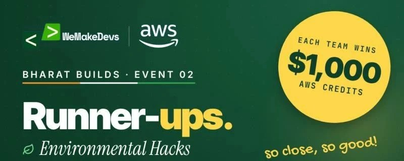
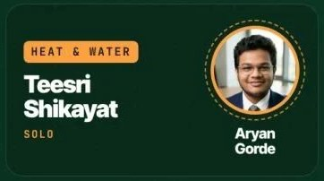

WeMakeDevs × AWS · Bharat Builds Tour, event 02 · 8–11 Oct 2026
Environmental Hacks
Runner-up
9,146 registered · one of 4 runners-up across all three tracks
Teesri Shikayat — a tripwire for dirty tap water. Hindi voice complaints on Telegram; when three homes close together report it, every home around them is warned, and only the residents can close the case.

